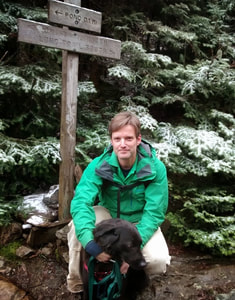
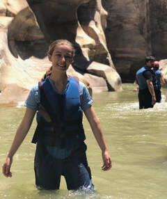
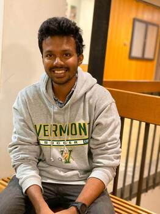
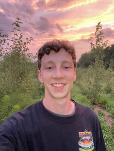
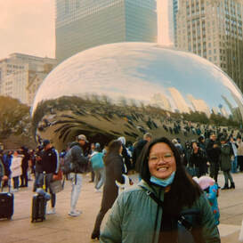
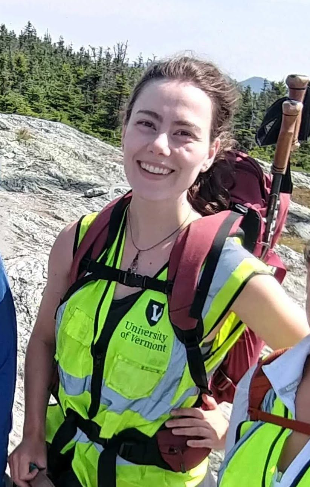

Meet the Keller labbies
~ the past, the present and the future collaborators

Dr. Stephen Keller


Steve got his B.S. from Juniata College in Pennsylvania before working as a biologist for the National Park Service in Colorado. From there, he ventured northward to do a master’s in biology at the University of Alaska Fairbanks with Kent Schwaegerle, where he studied breeding system evolution in arctic-alpine plants. Steve got his Ph.D. at the University of Virginia with Doug Taylor on the population genetics of invasive species, followed by postdoc research at the University of Minnesota in Peter Tiffin’s lab working on population genomics in Populus. After three years (2011-2014) on the faculty at the University of Maryland Center for Environmental Science, Steve joined the Department of Plant Biology at the University of Vermont.
Graduate Students
Nora Heaphy

Nora is interested in how plant live in stressful environments (especially in the Middle East and North Africa), if and how they will adapt to climate change, and how genetic factors interact with the environment to shape evolutionary trajectories. She completed her B.S. in Ecology and Evolutionary Biology at Yale, then worked as a research assistant in Erika Edwards’ lab, studying climate niche differentiation and convergent evolution in Portulaca and Viburnum. Before joining the Keller lab in 2023, she lived in Egypt and studied Arabic at the American University in Cairo.
Anoob Prakash

Anoob is interested in understanding the genomics and adaptation of fragmented ecosystem to rapid climate warming. For his PhD research, Anoob is investigating range wide variation and climate change adaptation in red spruce (Picea rubens Sarg). Specifically, he utilizes population genomic and quantitative genetic approaches to understand the long- and short-term responses of long-lived tree species like red spruce to climate change and pave the way for scientifically guided conservation efforts. As part of bridging the gap between science and restoration, he did restoration monitoring of red spruce with The Nature Conservancy (TNC) as part of his NSF-funded UVM QuEST internship. Before joining Keller lab in 2018, he completed his B.Sc. (Hons.) and M.Sc. in Forestry with specialization in Tree Physiology and Breeding at Kerala Agricultural University. During that time, he investigated the effects of particulate pollution on the growth and physiology of trees in moist deciduous forests.
Baxter Worthing

Baxter uses genetics and genomics to study two species of poplar tree: balsam poplar (Populus balsamifera) and black cottonwood (Populus trichocarpa). The goal of his research is to identify and untangle the genetic and environmental factors that influence adaptively important traits such as phenology and freezing tolerance, and to predict how these traits may respond to changing climates. Furthermore, P. balsamifera and P. trichocarpa hybridize in nature, a process that facilitates the transfer of genetic variation between species and that likely underlies adaptive phenotypic variation. To account for the geographic and genetic diversity, Baxter conducts his research using hundreds trees sampled from the wild and clonally propagated in common gardens at UVM and other locations across the country. He is combining observations of these trees with rich environmental and genetic data in order to better understand the complex interactions between genomics and ecology.
Rei Jia

Rei is a U.S. Department of Energy ORISE Fellow at the U.S. Forest Service Northeast Research Station working in the lab of Dr. Andrew Groover. She graduated from the University of Vermont with a B.S. in Wildlife Biology and earned a M.S. in Biology from Tufts University in 2023. While at Tufts, she worked in Dr. Benjamin Wolfe’s lab researching plant and soil microbiology. While an ORISE fellow with Andrew, she has been an honorary member of the Keller Lab, participating in lab group discussions and activities in the field and lab, particularly on extracting RNA from poplar leaf tissue to look at transcriptomic response to cold stress.
Lab Technician
Christa Lessing

Christa is interested in studying population genomics to contribute to the knowledge that helps people make informed decisions to protect our landscapes in a changing climate. Since joining the lab as a technician in 2024, she worked on the alpine population genetics project, a spruce hybridization project, an assisted migration project, and a poplar gene expression project. She strives to support the other members of the lab, whether through field sample collection across the north east, wet lab procedures, plant propagation, or general lab management. Before joining the Keller lab, she completed her BS in Plant Biology at UVM in 2023. As an undergraduate, she worked on a Brachypodium vernalization genetics project in the Preston Lab. She has also worked in the Connecticut Agricultural Experiment Station and for the Vermont Agency of Agriculture, Food and Markets.
Past Keller labbies
Angelica Golbin
Undergraduate Student
Angelica is an Environmental Sciences major and Molecular Genetics minor who joined the lab in 2021.She was awarded the Summer Undergraduate Research Fellowship in 2022, where she investigated how hybridization can transfer useful genes in poplars to generate offspring that show hybrid vigor under heat and drought stress. Building off of her summer research, Angelica worked on her thesis to investigate a candidate gene associated with adaptive introgression in admixed poplar.
Katie Nelson
Undergraduate Student
Katie graduated with Plant Biology major and Chemistry minor and joined the lab in 2022. She investigated how the infection of poplars with Melampsora rust fungi is affected by local climate, and how historic climate conditions have influenced the evolution of traits associated with disease resistance.
Katie Bardsley
Undergraduate Student
Katie graduated with a Plant Biology degree in 2021 and did her thesis work in the Keller lab. She investigated the demographic history of red spruce through the context of the chloroplast genome, gaining insight into changes in effective population size, population genetic structure, and hybridization since the last glacial maximum. She now works as a Scientific Program Analyst for the National Human Genome Research Institute (NHGRI), part of the NIH.
Dr. Thibaut Capblancq
Postdoctoral Researcher
Thibaut worked on red spruce genomics in the lab from 2019-2021, using whole exome sequencing data. He explored the species’ evolutionary history and investigated the genetic basis of red spruce adaptation to climate. He is now a postdoc studying the speciation process in Coenonympha alpine butterflies with Laurence Després and Mathieu Joron at the Laboratory of Alpine Ecology in Grenoble, France.
Dr. Vikram Chhatre
Postdoctoral Researcher
Vikram’s work in the Keller lab focused on understanding the genomic basis of climate adaptation in balsam poplar (Populus balsamifera). He is now a Research Scientist in the Department of Molecular Biology at the University of Wyoming.
Phil Crystal
Research Technician
Phil brought his strong skills in ecophysiology and the molecular genetics of forest trees to the lab. During his time here, he spearheaded phenotyping in the poplar common gardens, as well as getting the GBS library prep protocols up and running. He is now a Data Operations Manager at athenahealth, a healthcare IT company.
Sonia DeYoung
Research Technician
Sonia was a field technician in the lab helping with the red spruce seed collections and common garden experiments, as well as poplar field and common garden work. She currently works for the UVM Field Naturalist Program and is also working on the redesign of the UVM Natural History Museum.
Molly Estabrook
Undergraduate Student
Molly was an Environmental Sciences major who worked in the lab during the 2014-2015 academic year. Her project was to help develop an outreach demonstration plot of balsam poplars for the public in the gardens outside of Jeffords Hall.
Marley Ewick
Undergraduate Student
Marley was a Plant Biology major who worked in the lab in 2021. She helped to collect and depict data on fungus Melampsora and its impact on poplar trees in Vermont.
Dr. Karl Fetter
Ph.D. Student
Karl’s research examined the evolutionary genetics of Populus balsamifera x P. deltoides hybrid zones and the role that pathogens such as poplar leaf rust (Melampsora) play in driving adaptive introgression of genes associated with host immunity. He completed his Ph.D. in 2019 and is now a postdoc with Jill Wegrzyn in the Plant Computational Genomics Lab at the University of Connecticut.
Madeleine Hassett
Lab Research Technician and Undergraduate Student
Madie was a Plant Biology major who joined the lab in 2014. After graduating, she continued as a research technician on the balsam poplar common garden experiment, as well as piloting a qPCR study of gene expression differences in candidate phenology genes in poplar that that show signatures of local adaptation. Madie got her master’s in Microbiology at the University of New Hampshire and is now the Plant Disease Diagnostics Program manager at the UNH Plant Diagnostic lab.
Noah Kaufman
Undergraduate Student
Noah was a Plant Molecular Biology major who graduated in 2021. He worked on the NSF spruce project in the lab, studying red spruce chloroplast genomes to infer demographic history. He is now an ORISE Fellow at the U.S. Forest Service’s Pacific Southwest Research Station.
Dr. Susanne Lachmuth
Visiting Scholar
Susanne worked on using genotype by sequencing (GBS) to unravel the hybrid ancestry of invasive Centaurea in 2017. She is currently a researcher in our collaborator Matt Fitzpatrick’s lab at the University of Maryland Center for Environmental Science (UMCES), Appalachian Lab.
Dr. Sébastien Lavergne
Visiting Scholar
Seb is a Research Director at the Laboratory of Alpine Ecology in Grenoble, France. His research focuses on the mechanisms behind the evolution of species’ ecological niches and geographic ranges and how these processes drive speciation and shape the structure of natural communities. As a visiting scholar in 2021-22, he used population genomic analyses to determine glacial refugia and recolonization routes of Androsace argentea.
Helena Munson
Lab Research Technician and Undergraduate Student
Helena was an Environmental Science major who completed her thesis work in the Keller lab in 2019 and later worked as a lab technician on the NSF red spruce project. Her research investigated inbreeding depression in red spruce and at the physiological effects of stress on early life traits. She is now a dialysis technician at the UVM Medical Center.
Christine Nolan
Undergraduate Student
Christine was a Biochemistry major who investigated circadian clock genes that show parallel signatures of adaptation to climatic gradients. She is now a graduate student in the Biology Department at the University of Washington.
Zoe Portlas
Master’s Student
Zoe completed a Master’s degree in the lab (fall 2023) focusing on evolution of drought stress avoidance in native and invasive Centaurea (knapweeds). She also contributed to the lab’s population genomic analysis of this species invasion, using genotype-by-sequencing. She is now working as a data analyst with the city of Burlington!
Cortney Pylant
Master’s Student
Cortney earned her master’s degree working on the effects of wind energy development on migratory tree bats. Her project combined population genetics with stable isotopes and spatial modeling to study bat populations being impacted by turbines. She won a highly competitive EPA-STAR grad fellowship in support of this research. She is now a lab manager in the Department of Epidemiology at UNC’s Gillings School of Global Public Health.
Jo Robertson
Lab Research Technician
Jo graduated from UVM with a degree in Plant Biology in 2019 and joined the Keller lab in 2021 to work on the NSF-funded spruce ancient DNA project. She is now a Ph.D. student at the University of Chicago.
Will Seligmann
Undergraduate Student
Will graduated with a Biology degree in 2021, completing his thesis in the Keller lab. He explored local adaptation in balsam poplar through an analysis of potential parallel evolution between a broad and fine spatial scale. He is currently working as a research technician for the Paleogenomics Lab at the University of California, Santa Cruz.
Maddi Sorrentino
Undergraduate Student
Maddi was a Wildlife and Fisheries Biology major who worked on a variety of projects in the lab, from phenotyping phenology in the poplar common garden to taking care of spruce seedlings to harvesting a large quantitative genetics experiment in the greenhouse on Centaurea. Maddi interned with the Vermont Dept. of Fish and Wildlife in 2017, studying bats.
Ethan Thibault
Lab Research Technician and Undergraduate Student
Ethan was a Plant Biology major who worked for four years in the Keller lab, first as a work-study student and then for two years as a lab technician. He conducted experiments on poplar chilling requirements and led the ancient DNA research of the NSF-funded spruce project. In 2020, he earned an NSF Graduate Research Fellowship to begin his Ph.D. at Michigan State University in Federica Brandizzi’s lab.
Regina Trott
Faculty Research Assistant
Regina worked on projects for the Keller lab back at our former home at UMCES and is still a Faculty Research Assistant there. She has a black belt in molecular biology and is handy in the field and greenhouse as well. She works on a variety of different species, including poplars, stream diatoms and microbes, bats, and prairie dogs.
Dr. Brittany Verrico
PhD Student and Postdoctoral Researcher
Brittany completed her Ph.D. in 2021 on understanding climate responses of red spruce and its associated forest community along elevational gradients in the northeastern U.S., after which she stayed on as a postdoc, with a research focus on validating a genomic assessment of climate change vulnerability (i.e. genomic offset) in red spruce. She is currently a postdoc with Jill Preston’s lab, working on the evolution of stress tolerance in cold season grasses.
Dr. Jamie Waterman
Undergraduate Student
Jamie was a Forestry and Biochemistry major, interested in how biochemical interactions shape forest ecosystems. In the Keller lab, he worked with Karl to investigate variation in condensed tannin concentration across poplar genotypes. He completed his Ph.D. in 2021 at the Hawkesbury Institute for the Environment in Sydney, Australia. Now he is a postdoc in the Institute of Plant Sciences at the University of Bern in Switzerland.
Jeremy Weiland
Undergraduate Student
Jeremy was a Biological Science major with a minor in Chemistry and Computer Science, interested in the effects of climate change on the environment and what can be done to prevent them. In the Keller lab, he helped Brittany on her project examining red spruce ecotones from populations in the Green Mountains.
Dr. Chang Zhang
Research Project Specialist
Chang’s research investigated the pleiotropic effects of GIGANTEA in poplar, and the overlapping roles it plays in modulating multi-stress responses (cold, freezing, drought, heat) as well as dormancy induction. Her experiments involved a combination of growth chamber stress trials, RNASeq expression profiling, and phenotyping plant physiological responses.